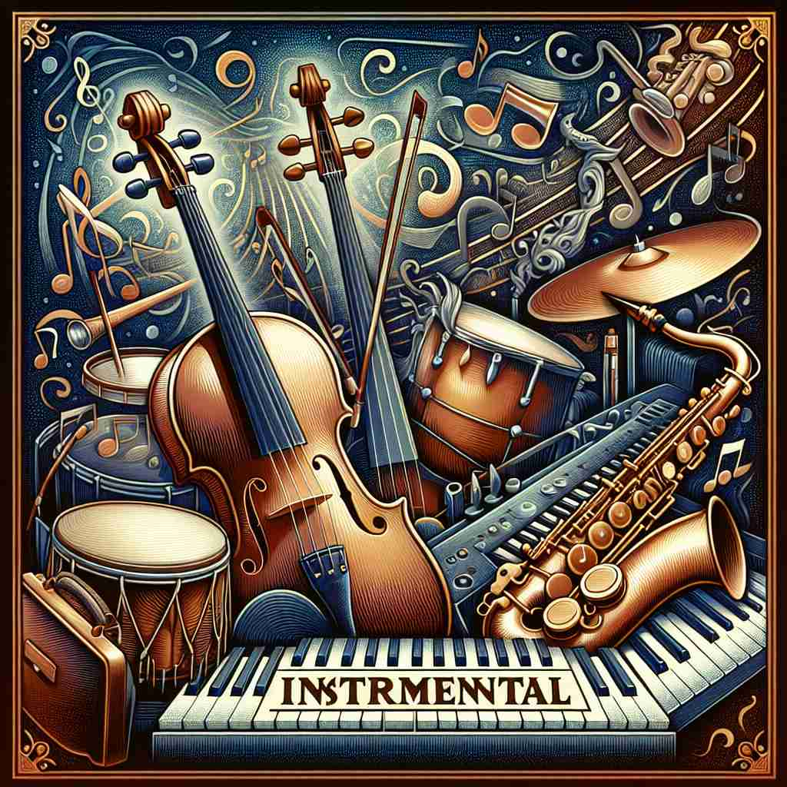

💬 The concert featured beautiful instrumental music from several instruments. 音乐会展示了来自多种乐器的美妙器乐音乐。
💬 The orchestra is playing beautiful instrumental music. 乐团正在演奏美妙的器乐音乐。

💬 Teamwork is instrumental in achieving a beautiful garden. 团队合作在打造美丽花园中起着重要作用。
💬 Teamwork is instrumental in success for any project. 团队合作对于任何项目的成功至关重要。
🧠 理解'instrumental'的关键在于把握'工具'或'手段'这个核心概念。无论是比喻性地帮助实现目标，还是具体指代乐器或纯器乐作品，甚至在语法中表示方式，都源于这个基本含义。把一切'instrumental'的用法想象成不同形式的'工具'，就能轻松掌握这个词的多重含义。
🔈 [ɪnstrʊ'ment(ə)l]
🗝️ adj. serving as a means or instrument to achieve something 作为达成某种目标的手段或工具
🎭 在一个创新创业会议上，每个人都在讨论最新的科技趋势。演讲者指出，他们的新平台在推动公司增长方面是'instrumental'的，就像一把钥匙打开了成功的大门。这个平台的使用，让公司在短时间内取得了显著的成绩。
💬 Her advice was instrumental in solving the problem. 她的建议对解决问题起到了关键作用。
🌳 由词根 "instrument"（器械，工具）加上形容词后缀 "-al"，构成一个形容词，表示 "作为工具的，有帮助的，起作用的"。
🕸️ 1.instrument: 工具，仪器 2.instrumentation: 仪器设备 3.instrumentalist: 乐器演奏者
💡 记忆 "instrumental" 时，可以联想为 "instrument" 加上 "-al"，让它具有形容词的性质，表示某物像工具一样起着重要作用或帮助。通过将 "乐器"（instrument）和 "重要作用" 连接起来，更容易理解其含义。